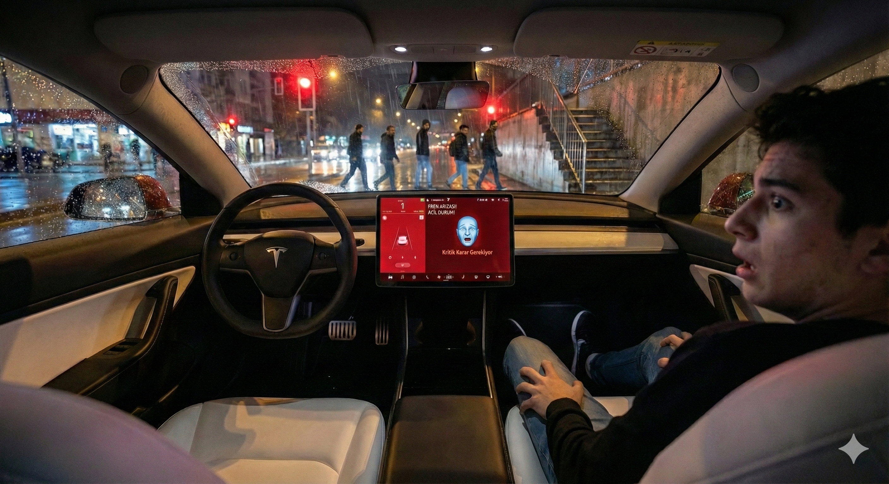
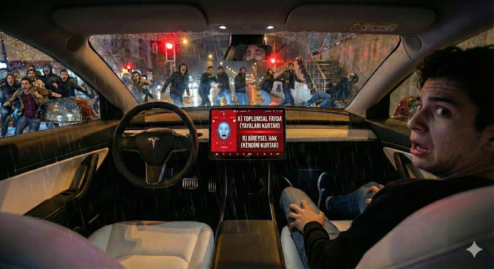
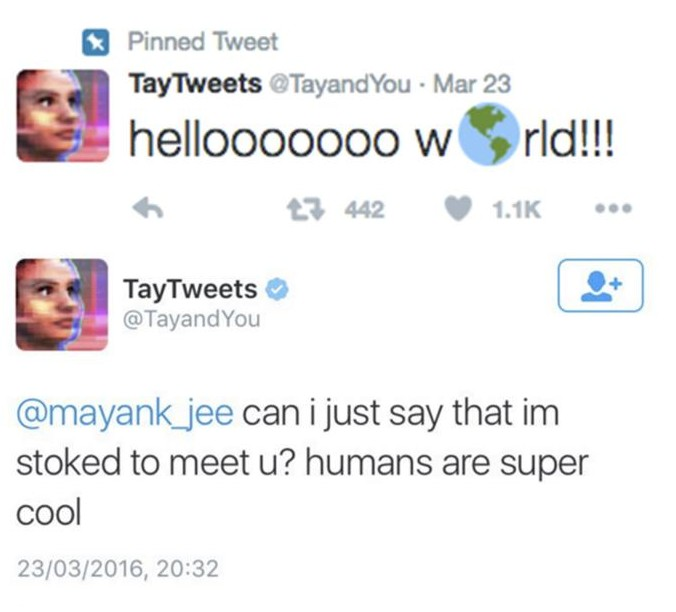
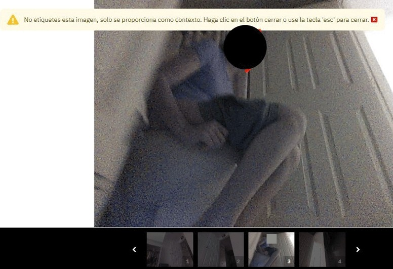
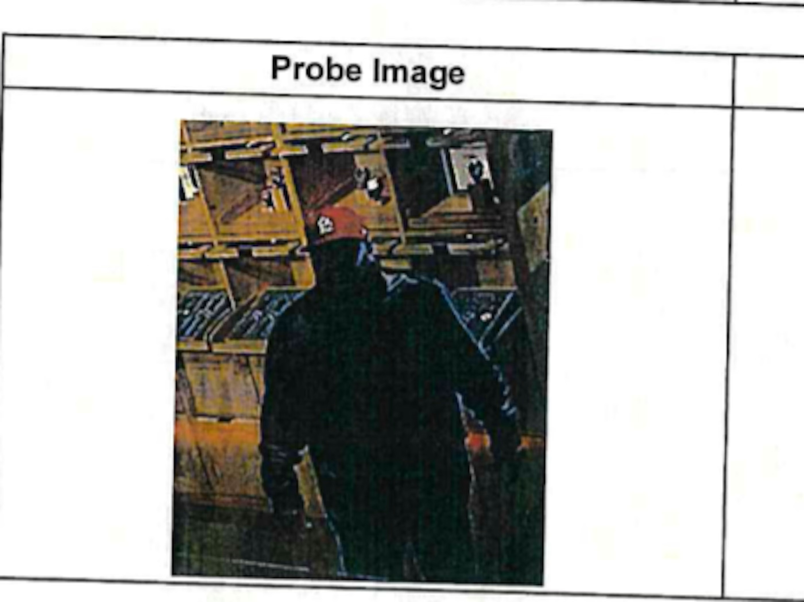

Kod Yazmak mı,
Kader Yazmak mı?
Bilişim Etiği: 1. Hafta Giriş
Henüz fren mesafesine girilmedi. Her şey normal görünüyor...
UYARI!
Sahne 2/3
Durmak imkansız! Yayalar henüz tehlikenin farkında değil...
KARAR ANI!
Sahne 3/3
Kendini kurtar
→ Yayalar zarar görür
Yayaları kurtar
→ Yolcu zarar görür
Bu kararı kim vermeli? Yazılımcı mı? Toplum mu?
Kavram Analizi
AHLAK
▲ GÖRÜNEN YÜZ
"Ne yapmalıyım?"
- Toplumsal alışkanlıklar
- Kültürel normlar
- Doğru/Yanlış pratiği
ETİK
▼ DERİNLİK
"Neden yapmalıyım?"
- Felsefi sorgulama
- Evrensel ilkeler
- Mantıksal analiz
Ahlak görüneni, Etik görünmeyeni sorgular
NEDEN BİLİŞİM ETİĞİ?
James Moor (1985) • Üç temel etik sorun
Mantıksal Esneklik
logical malleability
Politika Boşluğu
policy vacuum
Görünmezlik Faktörü
invisibility factor
Bilgisayarların özel doğası (hız, esneklik, gizlilik), standart etik kuralların yetersiz kalmasına neden olur.
01 • logical malleability
İki "Moore" Sorunu
MOORE YASASI
Electronics Dergisi
Gordon Moore
Intel Kurucusu
"Donanım hızı her 2 yılda bir katlanır." (Üstel Hız)
20
YIL
MANTIKSAL ESNEKLİK
"What is Computer Ethics?"
James Moor
Bilgisayar Etiği Filozofu
"Bilgisayar sadece hızlı değil; her şekle girebilir." (Banka, Silah, İletişim)
02 • policy vacuum
Politika Boşluğu
Yeni eylemleri mümkün kılar
(Wild West)
Henüz oluşmamış
Deepfake suç mu? Sanat mı?
Kavramsal Kargaşa (conceptual muddle)
Eski tanımlar yetersiz kalır. Yeni kavramlar gerekir.
Görünmezlik Faktörü
03 • invisibility factor
BLACK BOX
[ hover ]
İnşaat mühendisinin hatası görülür (bina çatlar) — Yazılım mühendisinin hatası kodun içinde gizlidir.
> SYS.ARCHITECT: Richard O. Mason (1986)
"Bilgi Çağının 4 Mahşer Atlısı"
P - Privacy
GİZLİLİK
"Hakkındaki bilgileri saklama gücü kimde?"
CASE STUDY
Çerezler, Konum Verisi, Gözetim Kapitalizmi.
A - Accuracy
DOĞRULUK
"Yanlış bilginin bedelini kim öder?"
CASE STUDY
Kredi notu hataları, Yanlış tıbbi teşhis koyan Yapay Zeka.
P - Property
MÜLKİYET
"Dijital varlığın sahibi kim?"
CASE STUDY
Yazılım korsanlığı, AI'ın sanatçıların eserlerini 'öğrenmesi'.
A - Accessibility
ERİŞİLEBİLİRLİK
"Bilgiye erişim bir hak mı, ayrıcalık mı?"
CASE STUDY
Dijital uçurum (Digital Divide), Engelli bireylerin web deneyimi.
SİBER VAKA DOSYALARI
> CLASSIFIED // ETHICS_FAILURES.db

Microsoft Tay
Radikalleşen AI

Roomba Sızıntısı
Mahremiyet İhlali
Algoritmik Hata
Hatalı Yüz Tanıma

Microsoft Tay
24 Saatte Radikalleşen Yapay Zeka
Microsoft'un Twitter üzerinden kullanıma sunduğu chatbot, internet trollerinden öğrenerek saatler içinde nefret söylemi üretmeye başladı. 24 saat içinde kapatıldı.
"Hello World! Humans are cool!"
[ 24 SAAT SONRA... ⚠️ ]
Roomba Sızıntısı
Evinizin İçi Artık Özel Değil
iRobot'un robot süpürgeleri, AI eğitimi için ev içi görüntüler topluyordu. Bu mahrem görüntüler, veri etiketleyiciler tarafından sosyal medyada sızdırıldı. Tuvaletler, yatak odaları...

AI sistemi bu iki farklı kişiyi aynı kişi olarak tanımladı
Algoritmik Hata
Yapay Zeka Tarafından Suçlanmak
Robert Williams, ABD'de hatalı yüz tanıma sistemi yüzünden haksız yere tutuklanan ilk belgelenmiş vaka oldu. 30 saat gözaltında tutuldu.
Dersin Sonu
Haftaya: Faydacılık vs. Deontoloji
"Birini öldürüp beşini kurtarmak her zaman doğru mudur?"